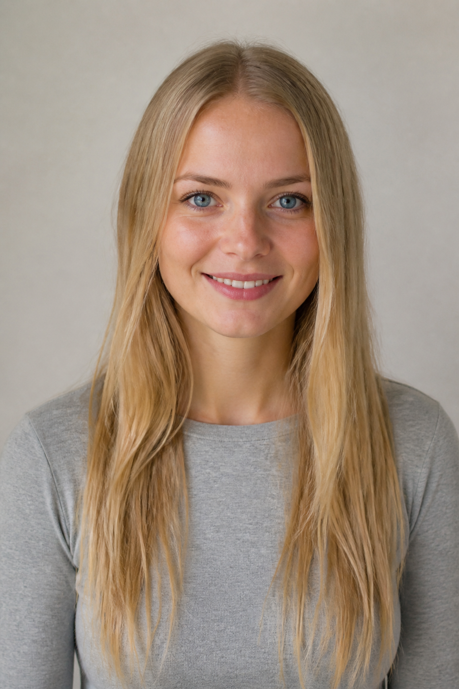

Eine logisch aufgebaute Lektion: vom Namen bis zu einem vollständigen persönlichen Gespräch.

Mă numesc Anna Keller. Sunt din Germania și locuiesc în Brașov. Am 27 de ani. Sunt studentă și învăț limba română. Numărul meu de telefon este 0722 345 678.
Hallo! Ich bin Anna. Ich heiße Anna Keller. Ich komme aus Deutschland und wohne in Brașov. Ich bin 27 Jahre alt. Ich bin Studentin und lerne Rumänisch.
Lernen Sie zuerst nur Name und Anrede. Antworten Sie mit ganzen Sätzen.
| Română | Deutsch | Răspuns-model |
|---|---|---|
| Cum te numești? | Wie heißt du? | Mă numesc Anna Keller. |
| Care este prenumele tău? | Wie ist dein Vorname? | Prenumele meu este Anna. |
| Care este numele tău de familie? | Wie ist dein Nachname? | Numele meu de familie este Keller. |
| Cum vă numiți? | Wie heißen Sie? | Mă numesc Anna Keller. |
| eu sunt | tu ești | el / ea este | noi suntem | voi sunteți | ei / ele sunt |
|---|---|---|---|---|---|
| ich bin | du bist | er/sie ist | wir sind | ihr/Sie sind | sie sind |
Laura: Bună! Eu sunt Laura. Tu cum te numești?
Anna: Bună! Mă numesc Anna Keller.
Laura: Îmi pare bine.
Anna: Și mie.
Eu sunt . Mă numesc . Prenumele meu este .
| Întrebare | Antwort |
|---|---|
| De unde ești? | Sunt din Germania. |
| Din ce oraș ești? | Sunt din Hamburg. |
| Unde locuiești? | Locuiesc în Brașov. |
| Ce limbă vorbești? | Vorbesc germană și engleză. |
| Înveți româna? | Da, învăț româna. |
din = aus
Sunt din Germania.
în = in
Locuiesc în Brașov.
germancă = deutsche Frau
Anna este germancă.
german = deutscher Mann
Paul este german.
| Țară | Naționalitate | Exemplu |
|---|---|---|
| Germania | germancă | Sunt germancă. |
| Austria | austriacă | Sunt austriacă. |
| Elveția | elvețiancă | Sunt elvețiancă. |
| România | româncă | Laura este româncă. |
De unde ești? Unde locuiești? Ce limbi vorbești?
| Întrebare | Deutsch | Răspuns-model |
|---|---|---|
| Care este adresa ta? | Wie ist deine Adresse? | Adresa mea este Strada Florilor, numărul 8. |
| Care este numărul tău de telefon? | Wie ist deine Telefonnummer? | Numărul meu este 0722 345 678. |
| Care este adresa ta de e-mail? | Wie ist deine E-Mail-Adresse? | Adresa mea de e-mail este anna@mail.de. |
| Îmi dai numărul tău? | Gibst du mir deine Nummer? | Da, sigur. |
0 zero · 1 unu · 2 doi · 3 trei · 4 patru · 5 cinci · 6 șase · 7 șapte · 8 opt · 9 nouă
Studentin A liest: 0741 905 263. Studentin B schreibt:
Dann tauschen Sie die Rollen.
Eu am 27 de ani.
Tu ai 30 de ani.
Ea are 25 de ani.
Im Rumänischen „hat“ man Jahre.
Sunt necăsătorită.
Sunt căsătorită.
Sunt divorțată.
Die Formen sind hier weiblich.
| Întrebare | Răspuns posibil |
|---|---|
| Câți ani ai? | Am 27 de ani. |
| Ești căsătorită? | Da, sunt căsătorită. / Nu, sunt necăsătorită. |
| Ai copii? | Da, am un copil. / Nu, nu am copii. |
| Ai frați sau surori? | Am un frate și o soră. |
| eu am | tu ai | el/ea are | noi avem | voi aveți | ei/ele au |
|---|
Laura: Câți ani ai, Anna?
Anna: Am 27 de ani.
Laura: Ești căsătorită?
Anna: Nu, sunt necăsătorită. Dar am o soră. Ea locuiește în München.
| Întrebare | Deutsch | Răspuns-model |
|---|---|---|
| Ce faci? | Was machst du? | Sunt studentă. |
| Ce studiezi? | Was studierst du? | Studiez economie. |
| Unde studiezi? | Wo studierst du? | Studiez la Universitatea din Brașov. |
| Ce profesie ai? | Was bist du von Beruf? | Sunt profesoară. |
| Unde lucrezi? | Wo arbeitest du? | Lucrez la o școală. |
Sunt studentă.
Sunt profesoară.
Sunt arhitectă.
Studiez medicină.
Lucrez la o firmă.
Lucrez în marketing.
Ce faci? Ce studiezi sau unde lucrezi?
Lesen Sie zuerst. Decken Sie danach die Antworten ab und spielen Sie Anna.
Secretara: Bună ziua! Cum vă numiți?
Anna: Bună ziua! Mă numesc Anna Keller.
Secretara: De unde sunteți?
Anna: Sunt din Germania, din Hamburg, dar locuiesc în Brașov.
Secretara: Câți ani aveți?
Anna: Am 27 de ani.
Secretara: Care este numărul dumneavoastră de telefon?
Anna: Numărul meu este 0722 345 678.
Secretara: Ce faceți în Brașov?
Anna: Sunt studentă și învăț limba română.
| Nume și prenume | Anna Keller |
| Țara de origine | Germania |
| Localitatea | Brașov |
| Vârsta | 27 de ani |
| Telefon | 0722 345 678 |
| Ocupația | studentă |
| Nume și prenume | |
| Țara / orașul | |
| Adresa | |
| Telefon / e-mail | |
| Vârsta | |
| Starea civilă | |
| Studii / profesie | |
| Limbi vorbite |
Schreiben Sie 8–10 Sätze. Verwenden Sie die Reihenfolge aus der Lektion.
Sprechen Sie 60–90 Sekunden. Sagen Sie: Name, Herkunft, Wohnort, Alter, Kontakt, Studium/Beruf und Sprachen.
Stellen Sie Ihrer Partnerin sieben Fragen. Notieren Sie danach vier Informationen über sie.
| Ich kann… | Ja | Noch üben |
|---|---|---|
| meinen Namen und meine Herkunft sagen | □ | □ |
| Adresse, Telefon und E-Mail nennen | □ | □ |
| Alter und Familienstand ausdrücken | □ | □ |
| über Studium oder Beruf sprechen | □ | □ |
| höfliche Fragen verstehen und beantworten | □ | □ |